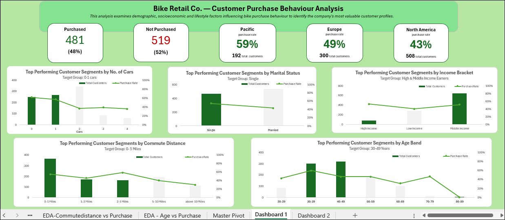

Customer Segmentation Analysis
A bike retail company has a large customer base, but its overall purchase numbers don't tell the full story. What does the data reveal at a closer look? I analysed 1,000 customer records to identify customer profiles associated with higher purchase rates and uncover where stronger growth opportunities exist. The analysis revealed two high-potential segments and hidden opportunities across key regional markets, providing a basis for more targeted marketing and expansion decisions.
